<h1> Neural Networks and Machine Learning </h1> <h2> Week 7: Deep Generative Models</h2> ### Instructors: Emre Neftci and Takashi Nagata <center>https://canvas.eee.uci.edu/courses/21750</center> <center>http://tinyurl.com/nmi-lab-appointments</center> [](?print-pdf)
<h2> Goody Bag IV</h2> <ol> <li/> Data Augmentation <li/> t-Distributed Stochastic Neighbor Embedding (t-SNE) </ol>
<h2> Data Augmentation</h2> <ul> <li/> Data augmentation is a key trick used to improve the test performance of deep neural networks, especially when the dataset is small. <li/> Increasing the datset size has an effect similar to regularization, by preventing overfitting. <li/> Several methods exist to augment the data: <ol> <li/> Random Crop <li/> Random flips <li/> Color jitter <li/> ... </ol> <li/> Pytorch torchvision.transforms has a long list of random transformations <li/> You can be creative and chain multiple transforms using transforms.Compose </ul> [](https://drive.google.com/open?id=1_9KnC7ezIre-n6G_6uC0oUHJzgxoRUyZ)
<h2> Visualization by Dimensionality Reduction </h2> <ul> <li/> PCA captures the directions of maximum variance. By limiting the number of directions to 2 or 3, we can visualize the dataset. 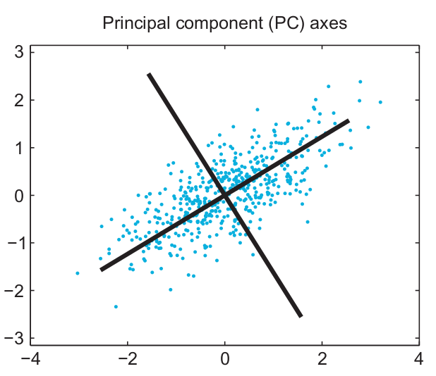 <li /> But PCA is just a linear projection, and the data many still be hard to visualize. <li /> A better visualization would be a dimensionality reduction that preserves the distances between points, because this will preserve the geometry of the data. <ul> <li /> Assume $d_{ij}$ is the original distance between point i and j, and $\hat{d}_{ij}$ is the distance in the projected space. We would like to minimize $$ C = \sum_{i \ne j} (d_{ij}-\hat{d}_{ij})^2 $$ <li /> t-SNE is the most popular method for dimensionality reduction in deep learning. </ul> </ul>
<h2> Goody IV.1: t-Distributed Stochastic Neighbor Embedding (t-SNE) </h2> <ul> <li/> t-SNE builds a neighbor relation ship between points and strives to keep the number of neighbors the same when projecting into the reduced space. <li /> However it is an optimization routine in itself which can get stuck in local minima (more data the better!) 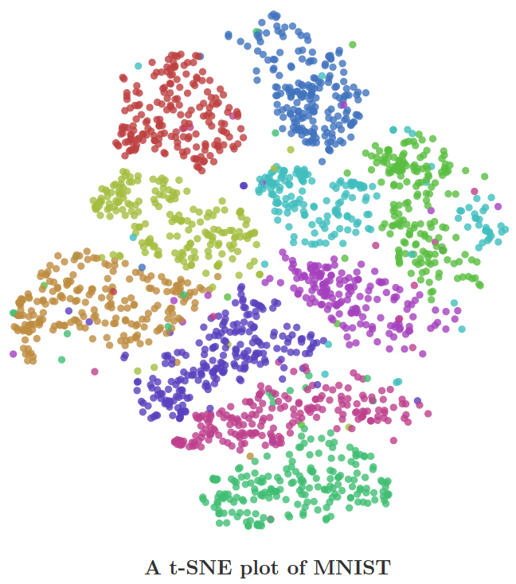 <pre><code class="Python" data-trim data-noescape> import numpy as np from sklearn.manifold import TSNE lat_tsne = TSNE(n_components=2).fit_transform(lat_z) </code></pre> <a href=http://jmlr.csail.mit.edu/papers/volume9/vandermaaten08a/vandermaaten08a.pdf><p class=ref>Van det Maaten et al. 2008</p></a> </ul>
<h2> Generative Models </h2> <ul> <li /> In high dimensional spaces, many vectors $\mathbf{x}$ result in $p(\mathbf{x})$ that vanish. It is more useful to focus around points that are likely. <li /> For example, if we wish to estimate the half of a digit, it would be very helpful to first decide which digit to draw. The digit forms the <em> latent variable </em> (code), which we called $\mathbf{z}$. 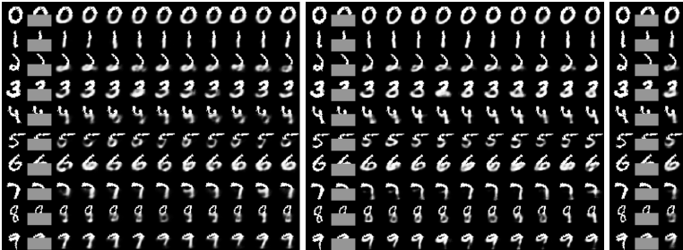 <li /> For this, we need to create a relationshop between $\mathbf{z}$ and $\mathbf{x}$. This means we aim to maximize $p(x)$ for every $\mathbf{x}$ in the dataset, <em> i.e. </em> $$ p(\mathbf{x}) = \int_\mathbf{z} p(\mathbf{x}|\mathbf{z}) p(\mathbf{z}) \mathrm{d}\mathbf{z} $$ where $\mathbf{z}$ is a latent variable <li /> There are two challenges: how to decide on $\mathbf{z}$, and how to perform the integral. </ul>
<h2> Variational AE (VAE) </h2> <ul> <li /> Variational Autoencoders were proposed as approximate but fast algorithms to maximizing $p(\mathbf{x})$ <li /> VAEs assert that $\mathbf{z}$ are drawn from a simple distribution, such as a multivariate Gaussian $N(0,\mathbb{I})$. <li /> How can this $\mathbf{z}$ be powerful enough? Given a random variable with one distribution, it is possible to create any other distribution provided a complex enough function. 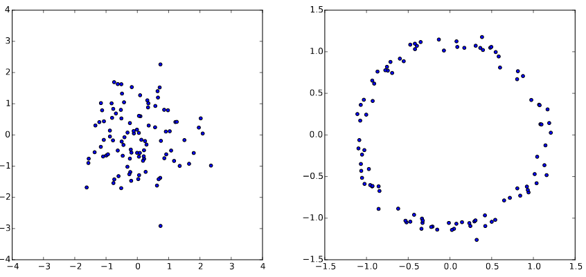 <p class=ref>Doersch, 2016, <em>Tutorial on Variational Autoencoders</em> </p> <li /> So from independent Gaussian-distributed variables, we can obtain any latent variable distribution, which can then be mapped to $\mathbf{x}$ using some function $f$. </ul>
<h2> Variational AE (VAE) </h2> <ul> <li/> VAEs use a Gaussian distribution in $p(\mathbf{x}|\mathbf{z})$, with mean $f_\theta(z)$ and variance $\sigma^2 \mathbb{I}$ $$ p(\mathbf{x}) = \int_\mathbf{z} N(\mathbf{x}|f_\theta(\mathbf{z}), \sigma^2 \mathbb{I}) p(\mathbf{z}) \mathrm{d}\mathbf{z} = \mathbb{E}_{z\sim p} N(\mathbf{x}|f_\theta(\mathbf{z}), \sigma^2 \mathbb{I})$$ (but any density that can be computed and differentiable with respect to the parameters $\theta$ can be used) <li /> Unfortunately, if $p(\mathbf{z})$ is also a Gaussian, many samples $\mathbf{z}$ are required to estimate $p(\mathbf{x})$. <li />VAEs solve this problem by restricting the integral to values of $\mathbf{z}$ that are likely to have produced $\mathbf{x}$. This is achieved by using a density $q(\mathbf{z}|\mathbf{x})$ instead of $p(\mathbf{z})$. <!-- We now have: $$ p(\mathbf{x}) = \mathbb{E}_{\mathbf{z}\sim q} N(\mathbf{x}|f_\theta(\mathbf{z}), \sigma^2 \mathbb{I}) = \mathbb{E}_{\mathbf{z}\sim q} p(x|z)$$ --> </ul>
<h2> Variational Lower Bound </h2> <ul> <li /> What is the relationship between $\mathbb{E}_{z\sim q} p(\mathbf{x}|\mathbf{z})$ and $p(\mathbf{x})$? <li /> The following relationship holds, known as the Variational lower bound. $$ \log p(\mathbf{x}) \ge \mathbb{E}_{\mathbf{z}\sim q} \log p(\mathbf{x}|\mathbf{z}) - KL(q(\mathbf{z}|\mathbf{x})||p(\mathbf{z})) $$ <li /> It is the cornerstone of all Variational Bayes techniques. <li /> By maximizing the right hand side, we optimize $\log p(\mathbf{x})$ </ul>
<h2> Optimizing the Variational Lower Bound </h2> $$ \text{ Variational Lower Bound: } \mathbb{E}_{\mathbf{z}\sim q} \log p(\mathbf{x}|\mathbf{z}) - KL(q(\mathbf{z}||\mathbf{x})|p(\mathbf{z})) $$ <ul> <li /> Right term: we need to choose $q(\mathbf{z}|\mathbf{x})$. Typically, it is a Gaussian distribution $N(\mathbf{z}| \mu(\mathbf{x},\theta), \Sigma(\mathbf{x},\theta))$, where $\mu$ and $\Sigma$ are implemented using neural networks. With this choice, the right term can be computed in closed form. <li /> Left term: We could evaluate it by sampling $\mathbf{z}$ and averaging them. But this is expensive. The solution is to take a "single sample average". <li /> We now have: $$ \log p(\mathbf{x}|\mathbf{z}) - KL(q(\mathbf{z}||\mathbf{x})|p(\mathbf{z})) $$ </ul>
<h2> Reparametrization Trick</h2> $$ \log p(\mathbf{x}|\mathbf{z}) - KL(q(\mathbf{z}||\mathbf{x})|p(\mathbf{z})) $$ <ul> <li /> But there is a problem: we also need to optimize $q$, which was used to <em>sample </em> $\mathbf{z}$. Stochastic gradient descent cannot deal with stochastic variables (stochastic samples are not differentiable). The trick is to sample $\mathbf{z}$ as follows: $$ z = \mu(\mathbf{x}) + \Sigma^{\frac12}(\mathbf{x})\odot \omega $$ where $\omega \sim N(0,\mathbb{I})$. This trick only works for certain distributions! </ul>
<h2> Variational AE (VAE) Summary </h2> <ul> <li /> Variational Autoencoders were proposed as approximate but fast algorithms to maximizing $p(\mathbf{x})$. With generative adversarial networks, they are the current state-of-the-art for generative modeling. <li /> As in AEs, VAEs consist in an encoder and a decoder function, both of which are neural networks. <li /> The code $\mathbf{z}$ is a random variable. <ul> <li /> Encoder $q_\phi(\mathbf{z}|\mathbf{x})$ is typically a gaussian probability density (dashed). <li /> Decoder $p_\theta(\mathbf{x}|\mathbf{z})$ (solid) is a likelihood function of choice (Bernouilli, Multinomial, Gaussian etc.) 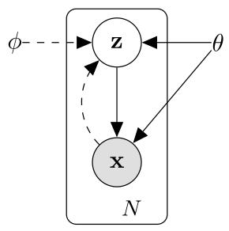 </ul> </ul>
<h2> Variational AE (VAE) Architecture </h2> <ul> <li /> $p_\theta(\mathbf{x}|\mathbf{z})$ is a neural network taking inputs $\mathbf{z}$ and producing an image <li /> $q_\phi(\mathbf{z}|\mathbf{x})$ is a neural network producing $\mu(\mathbf{x}) $ and $\mathbf{\Sigma}(\mathbf{x})$ <li /> $\mathbf{z}$ is created using the reparamerization trick $\mathbf{z} = \mu(\mathbf{x}) + \Sigma^{\frac12}(\mathbf{x})\odot \omega $ <img src="https://miro.medium.com/max/3374/1*22cSCfmktNIwH5m__u2ffA.png" /> </ul>
<h2> Variational AE (VAE) Implementation </h2> <ul> <li /> The loss function to evaluate is: $$ \log p(\mathbf{x}|\mathbf{z}) - KL(q(\mathbf{z}||\mathbf{x})|p(\mathbf{z})) $$ <ul> <li /> $ KL(q(\mathbf{z}||\mathbf{x})|p(\mathbf{z})) = KL(N(\mathbf{z}| \mu(\mathbf{x},\theta), \Sigma(\mathbf{x},\theta))||N(0,\mathbb{I}))$. The KL divergence between two Gaussians can be computed analytically. <li /> $\log p(\mathbf{x}|\mathbf{z})$, i.e. what is the likelihood of the true data $\mathbf{x}$ given $\mathbf{z}$? This depends on the likelihood function $p(\mathbf{x}|\mathbf{z})$ <ul> <li />Binary Data $\sim$ Bernouilli distribution: Binary cross entropy loss. <li />Categorical Data $\sim$ Multinomial distribution: Cross entropy loss. <li />Real Data $\sim$ Gaussian Density: Mean-Squared Error loss. </ul> </ul> </ul> [](https://drive.google.com/open?id=1Yh1qtakIrsukG_CYr86obSQiLhD3Gw9K)
<h2> Conditional Variational AE (VAE) Implementation </h2> <ul> <li /> As in classical autoencoders, by sampling randomly we have no control over which image class is generated (assuming a class type makes sense) <li /> There are two easy solutions <ol> <li /> Identify a subspace of $\mathbf{z}$ corresponding to the digits, and sample in that region <li /> Augment the encoder input with a class (= concatenate). <pre><code class="Python" data-trim data-noescape> torch.cat([data, labels1h], dim = 1) </code></pre> </ol> <li /> In class assignement, use either method to generate digits of the same class. </ul>
<h2> Generative Modeling </h2> <ul> <li/> Takes a training data consist of samples drawn from a data-generating distribution $p_{data}$ <li/> Learns to represent an estimate of that distribution somehow <li/> Some of them estimate the model $p_{model}$ explicitly and the others estimate implicitly <ul> <li/> Density estimation 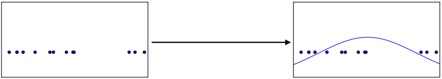 <p class=ref> NIPS 2016 Tutorial: Generative Adversarial Networks, Ian Goodfellow </p> <li/> Sample generation (GANs is in this category) <ul> <li/> Some examples later </ul> </ul> </ul>
<h2> Approaches to Generative Modeling </h2> 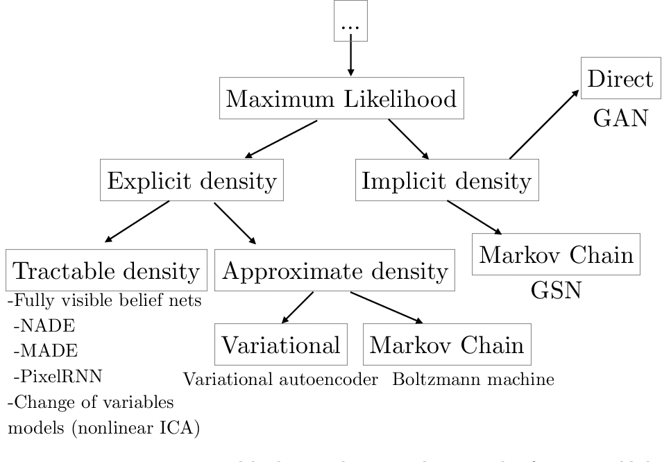 <p class=ref> NIPS 2016 Tutorial: Generative Adversarial Networks, Ian Goodfellow 2017 </p>
<h2> Generative Adversarial Networks - examples </h2> <ul> <li/> High quality image generation (Karras, et al., 2018) <li /> Too good to believe? I know... </ul> <iframe width="560" height="315" src="https://www.youtube.com/embed/G06dEcZ-QTg" frameborder="0" allow="accelerometer; autoplay; encrypted-media; gyroscope; picture-in-picture" allowfullscreen></iframe>
<h2> Generative Adversarial Networks - examples </h2> <ul> <li/> Image-to-Image translation (Isola, et al., 2017) </ul> <img src="img/pix2pix.png" class=stretch />
<h2> Generative Adversarial Networks - a brief intro </h2> <ul> <li/> A new framework for estimating generative models via an adversarial process <li /> Simultaneously train two models: <ul> <li/>a generative model G that captures the data distribution <li/>a discriminative model D that estimates the probability that a sample came from the training data rather than G </ul> </ul>
<h2> Generative Adversarial Networks - intuition </h2> <blockquote><p>The generative model can be thought of as analogous to a team of counterfeiters, trying to produce fake currency and use it without detection, while the discriminative model is analogous to the police, trying to detect the counterfeit currency. Competition in this game drives both teams to improve their methods until the counterfeits are indistiguishable from the genuine articles.</p> <footer>—Goodfellow, <cite>Generative Adversarial Networks</cite></footer> </blockquote> 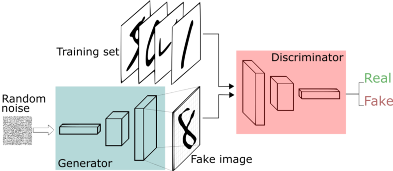 <p class=ref> Figure credit: An intuitive introduction to Generative Adversarial Networks (GANs)/freecodecamp </p>
<h2> Generative Adversarial Networks - Some background </h2> <ul> <li/> Zero-sum game <li/> Minimax <ul> <li/> You maximize your payoff <li/> Your opponent tries to minimize your payoff </ul> <li/> Find Nash equilibrium <ul> <li/> Each player is assumed to know the equilibrium strategies of the other players, and no player has anything to gain by changing only their own strategy (source: Wikipedia) </ul> </ul>
<h2> Generative Adversarial Networks - Cost function and how it works </h2> <h4>$min_G max_D V(D,G) = \mathbf{E}_{x \sim p_{data}(x)} \left[ logD(x) \right] + \mathbf{E}_{z \sim p_z(z)} \left[ log(1 - D(G(z))) \right]$</h4> <ul> <li/> $D$: the probability that a sample came from the training data rather than G <li/> First equation of the right hand side <ul> <li/> Sample data $x$ from real distribution <li/> Since $x$ is sampled from real distribution, $D(x)$ should be close to 1 </ul> <li/> Second equation of the right hand side <ul> <li/> Draw a noise $z$ from distribution $P_z$ and generate data $G(z)$ <li/> $G$ want to fool $D$: Want to make D(G(z)) close to 1 </ul> <ul> <li/> D wants to maximize (as close to 0 as possible) this quantity. G wants to minimize. </ul> </ul> <img src="img/logarithm.png" class=stretch /> <figcaption>Logarithm curve</figcaption>
<h2> GAN Implementation</h2> <ul> <li/> Two phases <ul> <li/> Train the discriminator with 1. real images and 2. fake images <li/> Train the generator by trying to fool the discriminator </ul> <li/> There is a quize in the code <pre><code class="Python" data-trim data-noescape> """ Quiz: Think which one you should use? """ #validity = torch.ones(batch, 1).to(device) #validity = torch.zeros(batch, 1).to(device) </code></pre> </ul> [](https://drive.google.com/open?id=1sTKjsfAJcaTTZ4y_UNlTG7Fn_HN9t77v)
<h2> Conditional GAN (cGAN) </h2> <ul> <li/> Although GANs showed successful image generation ability, there was no way to control or specify a certain type of image to generate <li/> Conditional Generative Adversarial Nets was proposed a few months later <ul> <li/> Provide some extra information y, such as class labels, to the generator and the discriminator <li/> How to conditioning? Simply concatenate the additional information with the input </ul> </ul> 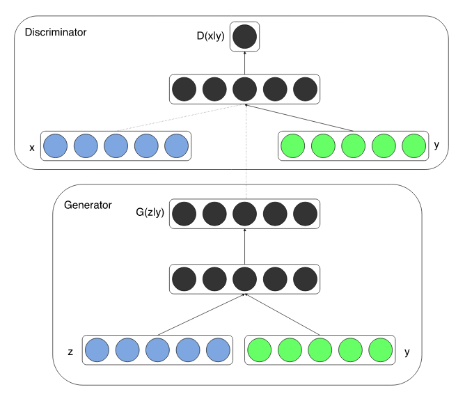
<h2> In-class Assignment: Conditioning your GAN</h2> <ul> <li/> Give an additional information (= one-hot representation of true class label) to both the generator and the discriminator <li/> A helper function is defined in the notebook to convert label which you can get from dataloader into one-hot vector. Feel free to use it or implement by yourself </ul> [](https://drive.google.com/open?id=17ud64BV2RajqussXMGtGpmXd7p8-Oxvs)
<h2> My work related to generative modeling </h2> <ul> <li/> Reinforcement Learning with generative modeling <ul> <li/> Simulate possible futures for planning in reinforcement learning task <li/> A generative model plays a role of the agent's internal "world model" </ul> <li/> Generate imaginary trajectories and plan ahead in combination with a recurrent neural network for short term memory (the video below is the real game image, not the generated one) </ul> <video width="320" height="240" controls> <source src="img/carracing_gym.mp4" type="video/mp4"> Your browser does not support the video tag. </video>
<h2> Reinforcement Learning </h2> 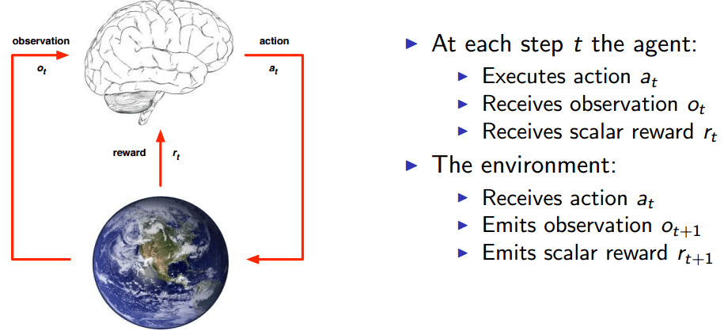 <p class=ref> A slide from David Silver's RL course </p>
<h2> Preliminary results </h2> <ul> <li/> left column: reconstructed images from predicted $z$ <li/> Right column: reconstructed images from real $z$ </ul> 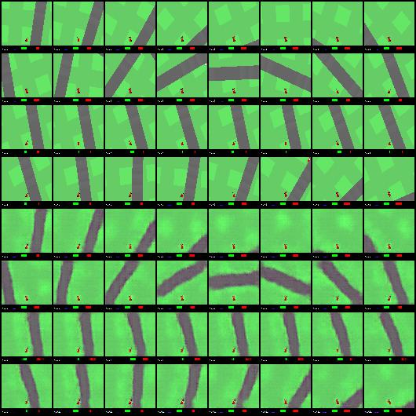
<h2> Preliminary results </h2> <ul> <li/> The first 4 rows are original input images <li/> Last 4 rows are reconstructed images in 30 epochs <li/> Should be able to generate lookahead trajectries </ul> 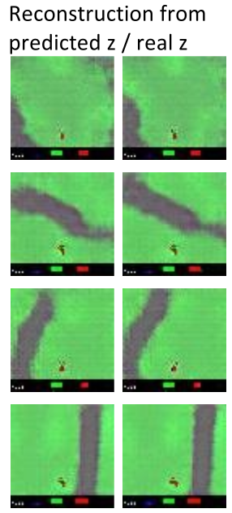
<h2> References </h2> <ul> <li /> Autoencoders: <a href=>Deep Learning, Goodfellow et al. 2015</a> <li /> Variational Autoencoder: <a href=>Deep Learning, Goodfellow et al. 2015</a> <li /> Variational Autoencoder: <a href=>Doersch et al. 2016</a> </ul> <ul> <li /> Generative Adversarial Networks: <a href="https://arxiv.org/abs/1406.2661">Goodfellow et al., 2014</a> <li /> Conditional Generative Adversarial Nets: <a href="https://arxiv.org/abs/1411.1784">Mehdi Mirza and Simon Osindero, 2014</a> <li/> NIPS 2016 Tutorial: Generative Adversarial Networks: <a href="https://arxiv.org/abs/1701.00160">Goodfellow, 2017</a> <li/> Some examples introduced in this slides <ul> <li/> Progressive Growing of GANs for Improved Quality, Stability, and Variation: <a href="https://arxiv.org/abs/1710.10196">Karras et al., 2017</a> <li/> Image-to-Image Translation with Conditional Adversarial Networks: <a href="https://arxiv.org/abs/1611.07004">Isola et al., 2017</a> </ul> </ul>